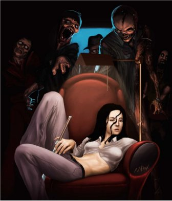
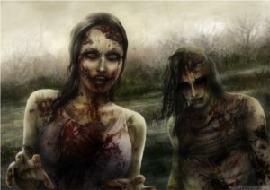
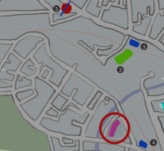
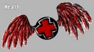
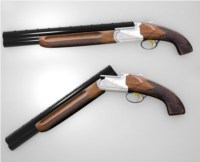

Z5 Zombie Survival GDD
Intro

Zombie Apocalypse breaks, world ends in 6 days
Player control a group of 5 random characters
There is a surviving chance. Somewhere
Each char have 5 attributes:
- Strength
- Speed
- Perception
- Speech
- Intelligence
And 3 status
- Hunger
- Vitality
- Fatigue
One of 3 natures, based on its attributes
- Aggressive
- Adaptive
- Peaceful
The whole game is based on 4 actions
- Scavenge
- Ambush
- Rest
- Move
TAGS: (Story Telling, Puzle, Strategy) (Survivors. Guns. Apocalypse) (Browser. Turns.)
Setup
The game starts on a monday.
During player’s first access, he gets assigned a random group of 5 chars. He may choose to roll 2 more times,
Each roll applies for a complete randomization all characters, including name, avatar, attributes and starting items.
Male-Base Characters: str: 2 spd: 2 prc: 1 spc: 1 int: 1
Female-Base Characters: str: 1 spd: 1 prc: 2 spc: 2 int: 1
For each Char:
- For each attribute, a dice is rolled, adding 1-3 points
- Each char gets a weapon, lv 1 - 4
- Food: 70% chance, lv 1-3
- Remedy: 30% chance, lv 1-3
- Utility: --next version
Map
The map is initially unknown, and gets incrementally discoved through exploration.
The group starts the game at some random map position
Whichever point is, there is a real chance of the group reaching the rescue point
The distance from the closest to the farthest player start point to the rescue point varies approximately 20%
The map is generated randomly. There should be no impassable barriers in the first version
Players should be positioned next to each other.. 1~2 days distance to the closest.
Buildings are placed at random distances, each have their own kinds of items
- houses
- meds, guns, cloth stores
- offices
- transports
- research institutes
- schools
Attributes
Assigned during setup, they are permanent.
They may be temporarily altered by status and items
- Strength:
- Influence melee weapons effectiveness
- Speed:
- Determine the range of scavenging as well as chance to scape dangerous situations
- Perception:
- Capacity of detecting zombies, traps and ambushes. Range of sight. Item spotting ability
- Speech:
- Capacity of convincing others to trade as well as acquiring info, the diplomatic way
- Intelligence:
- Ability of finding clues. As well of capabilities of deciphering then.
Status
Affects attributes, highly unstable.
Hunger: Influences all stats alike. Vary both color and tags; famished(red), starving, hungry, satisfied(light yellow), full(green)
Vitality: May incapacitate the char of taking actions, several: Healthy, wounded leg or arm( -2 str / spd), very hurt (disabled), recovering( -1 to str, spd, prc ), dead(you know)
Fatigue: Have random impact over attributes, based on level. Include: Rocking, bit tired, tired, exhausted.
Actions
Are decided at the begin of the turn, one per char, per turn, no limits.
May be assigned to individuals or groups, except Move, that shall be performed by all members.
- Scavenge:
-
Main action. A route is selected (perimeter is based on the minor speed of the members assigned to this action). After success, offer sight over the path taken.
- Recon: Allows greater distance, but less chance of obtaining items and info.
- Salvage: Opposite to recon, entails bigger risks
- Move:
- Orders the whole group to some location, either, open to the wilds, or a building. Bring along all equipments, but involve risks.
- Ambush:
- Take some cloaked position nearby, the objective is either to switch information, items, or predate on humans or animals, based on char nature. Depending on the weapon may be of great advantage.
- Rest
- At the actual shelter. Cannot be performed on open ground.
-
- One eye open, Greater bonus on territorial defense, while providing less rest. More chance of discoverinfo info, based on items and conversation.
- At ease, The char sleeps for full rest. More vulnerable. More chance of discovering info based on own memory.
Items
Divided in 3 categories, Equip, Consumable and Misc.
In terms of Equip, each char may carry only 1 vest and 1 weapon in missions, both equipped. Some equip, may demand some minimum requirements. [bullets should be infinite]
Some Equips;
revolver .38:
{lv: 2, Power: C, Recharge: C, Range: B}
Sniper:
{lv: 4 Power: A, Recharge: D, Range: S}
12:
{lv: 3, Power: A, Recharge: C, Range: C}
Baseball Bat:
{lv: 1, Power: (depends on STR), Recharge: S, Range: E}
Suit:
{speech: +2, speed: -1}
Workout Clothes:
{ speed: +2, speech: -1, (-fatigue)}
Baseball Cap:
{ perception: +1}
Lab coat:
{intelligence: +1}
Pajamas:
{--fatigue}
Leather Jacket:
{damage reduction}
Consumable items may alter attributes (for limited time) or status. May only be used outside of missions.
Some Consumables;
Apple:
{hunger-}
Bacon:
{5 charges of hunger-}
Bandage:
{vit+}
Misc can be stuff that offer clues (may require time and Intelligence to be deciphered), or stuff used at the shelter.
Some Misc;
Magazines and books, offer wisdom into game subjects.
i.e. “TATICS While ambushing may be wise to be done always with some ranged weapon”
Newspapers and papers, offer info into the current situation
i.e. “This terrain is expected to be bombed. Proceed [rigth direction string]North”
Notes, good hints about direction
“Salvation is at X degrees”
Movement sensor:
Placed at house surrounding, wake up people at any presence nearby.
Bomb Trap:
explode anything that steps on it.
Mechanics
#WORN-IN-PROGRESS
References
This game design embeeds artworks from great artists found on Deviant, all references in order:
Much of my inspiration comes from: Fallout 3, Dead Rising, Atom Zombie Smasher and many other zombie movies and games I love.